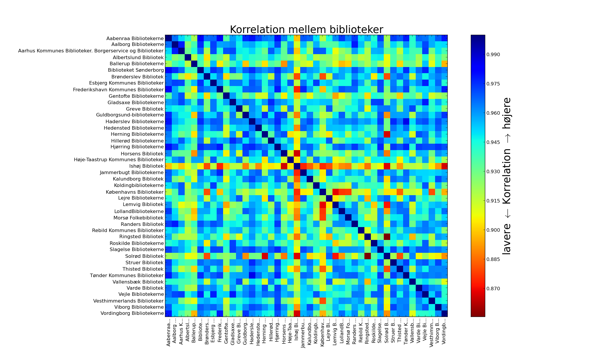

Hvad adskiller de forskellige biblioteker? Er der forskel på udlånet blandt biblioteker i Storkøbenhavn og de store provinsbyer i forhold til kommuner med forholdsvis små byer?

Overstående plot viser sammenhængen mellem forskellige biblioteksvæsener. Blå elementer viser en høj grad at sammenhæng mellem biblioteker på baggrund af de titelord på materialer der bliver lånt, mens råde har mindre overlap blandt titelord.
Kigger man nærmere på billedet viser det sig at det specielt er professionshøjskolernes og universitetsbiblioteket fra Roskilde der skiller sig ud fra andre biblioteker.
Hvis vi udelader professionshøjskolernes- og universitetsbibliotekerne og zoomer ind på folkebibliotekerne fremtræder forskellen mellem folkebibliotekerne tydligere.
Her viser det sig at for eksempel Ishøj skiller sig ud ved som det bibliotek, der har forholdvis lidt overlap blandt de titelord på det material der er udlånt: Det er de røde elementer man skal lægge mærke til.
Et andet interessant element er København der skiller sig ud fra bibliotekerne i Lemvig, på Lolland og på Morsø.
I nedenstående billede kan man skifte mellem sorteringer: Efter navn, korrelation (overlap i titelord af udlånt materiale) eller "klynge". For "klynge" er bibliotekerne forsøgt grupperet i fem grupper med en automatisk algoritme.
Alle biblioteker er korreleret med alle andre biblioteker, men en tærskelværdi er sat så lavt at ikke alle korrelationer vises. Denne tærskel får det til at se ud som om Ishøj er helt for sig selv.
Sortering:
Til data-nørder kan det fortælles at for hvert biblioteksvæsen er ord fra materialetitlen (f.eks. bogtitlen) udtrukket fra de 47 millioner udlånsdata og en data-matrix hvor rækkerne svarer til ord og kolonner svarer til biblioteksvæsener er konstrueret med antallet af "udlånte ord". Almindelige ord (danske og engelske stopord) er udeladt fra statistikken. Plottet viser korrelationsmatricen. Klyngerne er lavet med K-means på korrelationsmatricen.
Visualisering-teknologi fra Mike Bostock's Les Misérables Co-occurrence.